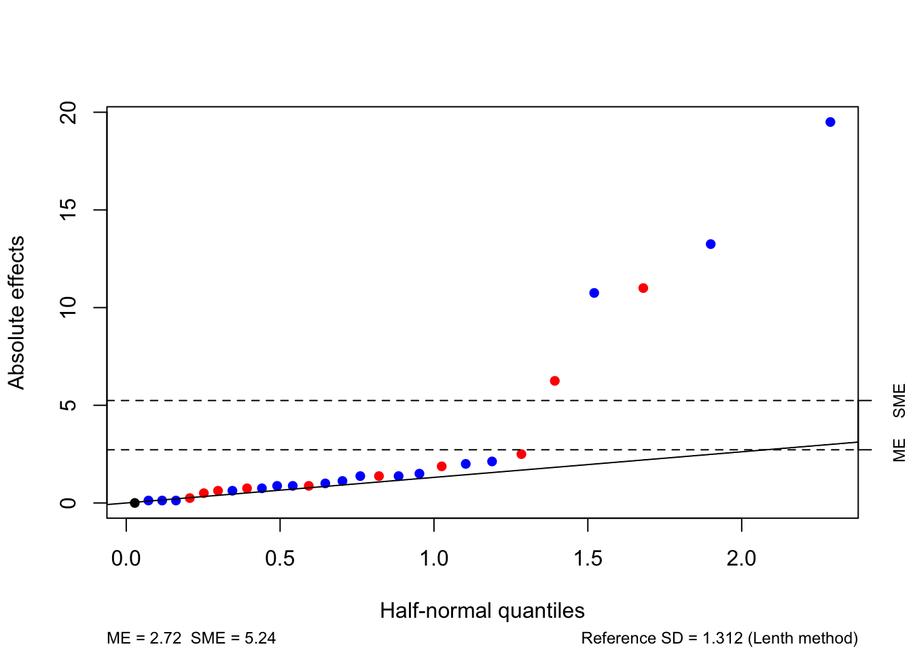

Chapter 5 Blocking in factorial designs
We now consider splitting the treatments in a factorial design into blocks. As in Chapter 3, the simplest factorial blocked design is a randomised complete block design, where the blocks are large enough for a complete replicate of the factorial treatments to occur in each block. Analysis then proceeds as in Chapter 3, with the contrasts of interest being those corresponding to the factorial effects (main effects and interactions).
However, the number of treatments grows rapidly in a factorial design, and it is unusual for the block sizes to be sufficiently large to accomodate a complete replication within each block. Hence, incomplete block designs must be employed. While balanced incomplete block designs (Section 3.6) can be used, they do not tend to have good statistical properties and their construction is complicated. In this chapter, we will focus on a class of methods specific to splitting a two-level factorial design in to blocks who common size \(k\) is a power of two.
5.1 Two examples
We will use two simple examples to illustrate this approach, based on a \(2^3\) experiment with factors labelled \(A\), \(B\) and \(C\) (Table 5.1).
example.design <- FrF2::FrF2(nruns = 8, nfactors = 3, randomize = F)
knitr::kable(example.design, caption = "Treatments from a $2^3$ factorial design", align = rep("r", 3))| A | B | C |
|---|---|---|
| -1 | -1 | -1 |
| 1 | -1 | -1 |
| -1 | 1 | -1 |
| 1 | 1 | -1 |
| -1 | -1 | 1 |
| 1 | -1 | 1 |
| -1 | 1 | 1 |
| 1 | 1 | 1 |
Example 5.1 Consider splitting the treatments between two blocks of size \(2^{3-1}=4\). One choice is given in Table 5.2.
block1 <- c(1, 2, 2, 1, 2, 1, 1, 2)
example.design.a <- cbind(example.design, Block = block1)
knitr::kable(example.design.a, caption = "Treatments from a $2^3$ factorial design split into two blocks of size four.", align = rep("r", 4))| A | B | C | Block |
|---|---|---|---|
| -1 | -1 | -1 | 1 |
| 1 | -1 | -1 | 2 |
| -1 | 1 | -1 | 2 |
| 1 | 1 | -1 | 1 |
| -1 | -1 | 1 | 2 |
| 1 | -1 | 1 | 1 |
| -1 | 1 | 1 | 1 |
| 1 | 1 | 1 | 2 |
To assess the impact of this choice of blocking scheme on the analysis of the experiment, we need to consider the (unscaled) contrasts corresponding to all the factorial effects, see Table 5.3.
X <- model.matrix( ~ Block + (A + B + C)^3, data = example.design.a)
Xdf <- data.frame(X[, -1])
colnames(Xdf) <- c("Block", "A", "B", "C", "A:B", "A:C", "B:C", "A:B:C")
Xdf <- dplyr::mutate(Xdf, Treatment = 1:8, .before = Block)
knitr::kable(Xdf, caption = "Unscaled factorial effect contrasts for a $2^3$ design with one possible assignment of treatments to blocks")| Treatment | Block | A | B | C | A:B | A:C | B:C | A:B:C |
|---|---|---|---|---|---|---|---|---|
| 1 | 1 | -1 | -1 | -1 | 1 | 1 | 1 | -1 |
| 2 | 2 | 1 | -1 | -1 | -1 | -1 | 1 | 1 |
| 3 | 2 | -1 | 1 | -1 | -1 | 1 | -1 | 1 |
| 4 | 1 | 1 | 1 | -1 | 1 | -1 | -1 | -1 |
| 5 | 2 | -1 | -1 | 1 | 1 | -1 | -1 | 1 |
| 6 | 1 | 1 | -1 | 1 | -1 | 1 | -1 | -1 |
| 7 | 1 | -1 | 1 | 1 | -1 | -1 | 1 | -1 |
| 8 | 2 | 1 | 1 | 1 | 1 | 1 | 1 | 1 |
Each contrast vector in Table 5.3 is orthogonal, in the sense of -1 and +1 occuring equally often (twice) in each block, except for the contrast vector for the three-factor interaction. This vector has all -1 entries occuring in block 1, and all +1 entries occuring in block 2.
The difference in average response between blocks 1 and 2 in this design is estimated by
\[ \widehat{\beta_1 - \beta_2} = \frac{1}{4}\left\{(y_{11} + y_{14} + y_{16}+ y_{17}) - (y_{22} + y_{23} + y_{25} + y_{28})\right\}\,, \]
where \(\beta_i\) is the effect of the \(i\)th block in unit-block-treatment model (3.1) and \(y_{ij}\) is the response from applying treatment \(j\) to a unit in block \(i\) (\(i = 1, 2;\, j = 1, \ldots, 8\)).
This contrast is exactly the same as the contrast for estimating the three-factor interaction.
\[ \mathrm{Int}(A, B, C) = \frac{1}{4}\left\{(y_{11} + y_{14} + y_{16}+ y_{17}) - (y_{22} + y_{23} + y_{25} + y_{28})\right\}\,. \] Hence this choice of blocking makes it impossible for us to estimate this interaction. If the contrast is large, we would anticipate it was because there is a large difference in average response between blocks, not because of the three-factor interaction.
So why choose this particular blocking? Well, it is impossible to split this set of treatments into incomplete blocks (with \(k<8\)) and not lose some information about the factorial effects.
From effect hierarchy, the three-factor interaction is the least likely factorial effect to be important, and hence this is the interaction we care least about losing information about. Choosing any of the other factorial effects to determine the blocking would be a worst choice30
What about if we don’t use a column of Table 5.3 to assign treatments to blocks? We now longer lose all information about a particular factorial effect, but instead we lose some information about many, or even all, factorial effects.
We can study this information lose by assessing all \({8 \choose 4}! = 70\) possible assignments of treatments to blocks. For each, we will calculate the average variance of the main effect and two-factor interaction contrasts (up to a constant \(\sigma^2\)).
no.assign <- choose(8, 4)
assignments <- combinat::combn(8, 4)
yfake <- rnorm(8)
Xadf <- cbind(Xdf[, c(-1, -9)], y = yfake)
avgvar <- NULL
for(i in 1:no.assign) {
B <- rep(1, 8)
B[assignments[, i]] <- -1
Xadf$Block <- B
temp.lm <- lm(y ~ Block + (A + B + C)^2, data = Xadf)
temp.lm$residuals <- yfake
temp.lm$df.residual <- 8
vmat <- vcov(temp.lm) / (summary(temp.lm)$sigma^2)
vars <- (diag(vmat[-c(1:2), -c(1:2)]))
tidyr::replace_na(vars, Inf)
avgvar[i] <- sum(tidyr::replace_na(vars, Inf)) / 6
}
knitr::kable(table(avgvar), col.names = c("Avg. variance", "Freq."))| Avg. variance | Freq. |
|---|---|
| 0.125 | 2 |
| 0.1875 | 32 |
| Inf | 36 |
From our study, we see that there are two allocations of treatments to blocks that give us the smallest average variance of \(0.125\sigma^2\). These two allocations are those that use the three-factor interaction column to assign treatments to blocks. For 32 other allocations, the average variance \(0.188\sigma^2\), and hence an efficiency of \(0.6649\) compared to the first two allocations. There are also 36 allocations that have infinite average variance; these allocations use one of the six main effect or two-factor interaction columns to assign treatments to blocks. For any of these choices, the corresponding factorial effect cannot be estimated, equivalent to the estimator having infinite variance.
We now compare our original design to one of the 32 allocations with average variance \(0.188\sigma^2\) (chosen arbitrarily).
knitr::kable(cor(Xa), caption = "Scaled inner-products between contrast vectors for $2^3$ with treatments assigned to blocks so $\\mathrm{Blocks} = ABC$.")| Block | A | B | C | A:B | A:C | B:C | A:B:C | |
|---|---|---|---|---|---|---|---|---|
| Block | 1 | 0 | 0 | 0 | 0 | 0 | 0 | 1 |
| A | 0 | 1 | 0 | 0 | 0 | 0 | 0 | 0 |
| B | 0 | 0 | 1 | 0 | 0 | 0 | 0 | 0 |
| C | 0 | 0 | 0 | 1 | 0 | 0 | 0 | 0 |
| A:B | 0 | 0 | 0 | 0 | 1 | 0 | 0 | 0 |
| A:C | 0 | 0 | 0 | 0 | 0 | 1 | 0 | 0 |
| B:C | 0 | 0 | 0 | 0 | 0 | 0 | 1 | 0 |
| A:B:C | 1 | 0 | 0 | 0 | 0 | 0 | 0 | 1 |
knitr::kable(cor(Xb), caption = "Scaled inner-products between contrast vectors for $2^3$ with treatments assigned to blocks arbitrarily.")| Block | A | B | C | A:B | A:C | B:C | A:B:C | |
|---|---|---|---|---|---|---|---|---|
| Block | 1.0 | 0.5 | 0.5 | 0.5 | 0 | 0 | 0 | -0.5 |
| A | 0.5 | 1.0 | 0.0 | 0.0 | 0 | 0 | 0 | 0.0 |
| B | 0.5 | 0.0 | 1.0 | 0.0 | 0 | 0 | 0 | 0.0 |
| C | 0.5 | 0.0 | 0.0 | 1.0 | 0 | 0 | 0 | 0.0 |
| A:B | 0.0 | 0.0 | 0.0 | 0.0 | 1 | 0 | 0 | 0.0 |
| A:C | 0.0 | 0.0 | 0.0 | 0.0 | 0 | 1 | 0 | 0.0 |
| B:C | 0.0 | 0.0 | 0.0 | 0.0 | 0 | 0 | 1 | 0.0 |
| A:B:C | -0.5 | 0.0 | 0.0 | 0.0 | 0 | 0 | 0 | 1.0 |
From Table 5.4, we can see that the block contrast is orthogonal to (has zero inner product with) all the main effect and two-factor interaction contrasts. In comparison, the design with arbitrary treatment assignment has non-zero inner products between blocks and the main effect contrasts (Table 5.5). However, this design does allow estimation of the three-factor interaction (although it too has non-zero inner-product with the block contrast).31
Clearly, if interest is in estimation of the main effects and two-factor interactions, it is best to use the design which assigns treatments to blocks via the three-factor interaction contrast coefficients.
Definition 5.1 A factorial effect is said to be confounded with blocks if the same contrast in the observations estimates both the factorial effect and a difference between blocks.
In Example 5.1, the three-factor interaction \(ABC\) is confounded with blocks. We write \(\mathrm{Blocks} = ABC\) as a shorthand to represent this confounding.
Example 5.2 Now consider splitting the treatments between four blocks of size \(2^{3-2}=2\). One choice is given in Table 5.6.
block2 <- c(4, 3, 2, 1, 1, 2, 3, 4)
example.design.b <- cbind(example.design, Block = block2)
knitr::kable(example.design.b, caption = "Treatments from a $2^3$ factorial design split into four blocks of size two.", align = rep("r", 4))| A | B | C | Block |
|---|---|---|---|
| -1 | -1 | -1 | 4 |
| 1 | -1 | -1 | 3 |
| -1 | 1 | -1 | 2 |
| 1 | 1 | -1 | 1 |
| -1 | -1 | 1 | 1 |
| 1 | -1 | 1 | 2 |
| -1 | 1 | 1 | 3 |
| 1 | 1 | 1 | 4 |
Clearly, we cannot use a single factorial contrast (taking only two values) to divide treatments between four blocks. The obvious extension to the approach from Example 5.1 is to use the combination of two columns. Here, we have used the contrasts for the \(AB\) and \(AC\) interactions.
X <- model.matrix( ~ Block + (A + B + C)^3, data = example.design.b)
Xdf <- data.frame(X[, -1])
colnames(Xdf) <- c("Block", "A", "B", "C", "A:B", "A:C", "B:C", "A:B:C")
Xdf <- dplyr::mutate(Xdf, Treatment = 1:8, .before = Block)
knitr::kable(Xdf, caption = "Unscaled factorial effect contrasts for a $2^3$ design with one possible assignment of treatments to four blocks of size two.")| Treatment | Block | A | B | C | A:B | A:C | B:C | A:B:C |
|---|---|---|---|---|---|---|---|---|
| 1 | 4 | -1 | -1 | -1 | 1 | 1 | 1 | -1 |
| 2 | 3 | 1 | -1 | -1 | -1 | -1 | 1 | 1 |
| 3 | 2 | -1 | 1 | -1 | -1 | 1 | -1 | 1 |
| 4 | 1 | 1 | 1 | -1 | 1 | -1 | -1 | -1 |
| 5 | 1 | -1 | -1 | 1 | 1 | -1 | -1 | 1 |
| 6 | 2 | 1 | -1 | 1 | -1 | 1 | -1 | -1 |
| 7 | 3 | -1 | 1 | 1 | -1 | -1 | 1 | -1 |
| 8 | 4 | 1 | 1 | 1 | 1 | 1 | 1 | 1 |
In Table 5.7 we can see that the contrasts for \(AB\) and \(AC\) are confounded with blocks (the contrast coefficients are constant within each blocks).
Block 1 contains treatments 4 and 5, which have \(AB = +1\) and \(AC = -1\).
Block 2 contains treatments 3 and 6, which have \(AB = -1\) and \(AC = +1\).
Block 3 contains treatments 2 and 7, whicn have \(AB = AC = -1\).
Block 4 contains treatments 1 and 8, which have \(AB = AC = +1\).
However, by confounding interactions \(AB\) and \(AC\) we have also confounded the elementwise (Hadamard) product of these two interactions:
\[ AB \odot AC = A \odot B \odot A \odot C = B \odot C = BC\,. \] If the contrast vectors for \(AB\) and \(AC\) are constant, the contrast vector for interaction \(BC\) must also be constant. Hence, interaction \(BC\) is also confounded with blocks.
We write this confounding as
\[ \mathrm{Block}_1 = AB\,,\quad \mathrm{Block}_2 = AC\,,\quad \mathrm{Block}_3 = \mathrm{Block}_1\times\mathrm{Block}_2 = BC\,. \] Clearly, alternative blocking schemes are possible. However, we must be careful not to inadvertently confound low-order factorial effects. For example, if we chose to confound the three-factor interaction \(ABC\) with blocks, along with one two-factor interaction, say \(BC\), then we also confound
\[ ABC \odot BC = A \odot B \odot C \odot B \odot C = A\,. \] Hence, the main effect of factor \(A\) is also confounded with blocks. This is clearly undesirable, e.g. by effect hierarchy.
We shouldn’t be surprised that a third factorial effect was confounded with blocks. In the unit-block-treatment model (3.2), the rank of the block model matrix \(X_1\) is equal to 3, and hence there will be three degrees of freedom required to estimate the blocking effects.
As in Example 5.1, we could also explore alternative blocking schemes that do not completely confound factorial effects with blocks. However, as before, these alternatives would lead to higher average variance for the estimation of main effects compared to the design that confounds the three two-factor interactions.32
Definition 5.2 In a blocked factorial design, those effects which are not confounded with blocks are called clear.
In Example 5.1, the clear effects are \(A\), \(B\), \(C\), \(AB\), \(AC\) and \(BC\). In Example 5.2, the clear effects are \(A\), \(B\), \(C\) and \(ABC\).
5.2 General method of constructing a confounded block design
To arrange a \(2^{f}\) design in \(b=2^{q}\) blocks of size \(k=2^{f-q}\):
- choose \(q\) independent factorial contrasts for the defining blocks. Typically, we choose higher-order interactions (due to effect hierarchy):
\[ \mathrm{Block}_{1}=\boldsymbol{c}_{1},\ldots,\mathrm{Block}_{q} = \boldsymbol{c}_{q}\,. \]
- all the hadamard products of \(\boldsymbol{c}_{1},\dots,\boldsymbol{c}_{q}\) are also confounded with blocks:
\[ \begin{array}{ccc} \mathrm{Block}_{1}\mathrm{Block}_{2}&=&\boldsymbol{c}_{1}\odot\boldsymbol{c}_{2} \\ \mathrm{Block}_{1}\mathrm{Block}_{3}&=&\boldsymbol{c}_{1}\odot\boldsymbol{c}_{3} \\ \vdots&=&\vdots\\ \mathrm{Block}_{1}\mathrm{Block}_{2}\dots \mathrm{Block}_{q}&=&\boldsymbol{c}_{1}\odot\boldsymbol{c}_{2}\odot\dots\odot \boldsymbol{c}_{q}\ \end{array} \] - in total, \(2^q -1\) factorial effects will be confounded with blocks.
For example, a \(2^{8}\) design in \(b = 2^{3}=8\) blocks of size \(k = 2^{8-3}=2^{5}=32\). We choose the following \(q=3\) defining blocks:
\[ \mathrm{Block}_{1}=ACEGH\,,\quad \mathrm{Block}_{2}=BCFGH\,,\quad \mathrm{Block}_{3}= BDEGH\,. \]
We obtain the other confounded effects by hadamard multiplication:
\[\begin{eqnarray} \mathrm{Block}_{1}\odot \mathrm{Block}_{2} & = & ABEF \nonumber\\ \mathrm{Block}_{1}\odot \mathrm{Block}_{3} & = & ABCD \nonumber\\ \mathrm{Block}_{2}\odot \mathrm{Block}_{3} & = & CDEF \nonumber\\ \mathrm{Block}_{1}\odot \mathrm{Block}_{2} \odot \mathrm{Block}_{3} & = & ADFGH\,. \nonumber \end{eqnarray}\]
It is also straightforward to find blocked fractional factorial designs using FrF2 in R. For example, to find the two \(2^3\) designs at the start of this chapter, with blocks of size \(k=4\) and \(k=2\), we simply set the blocks argument equal to the number of blocks \(b\), see Tables 5.8 and 5.933.
block1.frf2 <- FrF2::FrF2(nruns = 8, nfactors = 3, blocks = 2,
alias.info = 3, randomize = F)
block1 <- data.frame(model.matrix(~ Blocks + (A + B + C)^3, block1.frf2))
block1 <- dplyr::mutate(block1, Treatment = 1:8, .before = Blocks1)
knitr::kable(block1[, -1], col.names = c("Treatment", "Block", "A", "B", "C",
"A:B", "A:C", "B:C", "A:B:C"),
caption = "$2^3$ factorial design in two blocks of size four")| Treatment | Block | A | B | C | A:B | A:C | B:C | A:B:C |
|---|---|---|---|---|---|---|---|---|
| 1 | -1 | -1 | -1 | -1 | 1 | 1 | 1 | -1 |
| 2 | -1 | -1 | 1 | 1 | -1 | -1 | 1 | -1 |
| 3 | -1 | 1 | -1 | 1 | -1 | 1 | -1 | -1 |
| 4 | -1 | 1 | 1 | -1 | 1 | -1 | -1 | -1 |
| 5 | 1 | -1 | -1 | 1 | 1 | -1 | -1 | 1 |
| 6 | 1 | -1 | 1 | -1 | -1 | 1 | -1 | 1 |
| 7 | 1 | 1 | -1 | -1 | -1 | -1 | 1 | 1 |
| 8 | 1 | 1 | 1 | 1 | 1 | 1 | 1 | 1 |
block2.frf2 <- FrF2::FrF2(nruns = 8, nfactors = 3, blocks = 4,
alias.info = 3, randomize = F, alias.block.2fis = T)
block2 <- data.frame(model.matrix(~ Blocks + (A + B + C)^3, block2.frf2))
block2 <- dplyr::mutate(block2, Treatment = 1:8, .before = Blocks1)
knitr::kable(block2[, -1],
col.names = c("Treatment", "Block1", "Block2", "Block3",
"A", "B", "C",
"A:B", "A:C", "B:C", "A:B:C"),
caption = "$2^3$ factorial design in four blocks of size two")| Treatment | Block1 | Block2 | Block3 | A | B | C | A:B | A:C | B:C | A:B:C |
|---|---|---|---|---|---|---|---|---|---|---|
| 1 | -1 | -1 | 1 | -1 | 1 | 1 | -1 | -1 | 1 | -1 |
| 2 | -1 | -1 | 1 | 1 | -1 | -1 | -1 | -1 | 1 | 1 |
| 3 | 1 | -1 | -1 | -1 | 1 | -1 | -1 | 1 | -1 | 1 |
| 4 | 1 | -1 | -1 | 1 | -1 | 1 | -1 | 1 | -1 | -1 |
| 5 | -1 | 1 | -1 | -1 | -1 | 1 | 1 | -1 | -1 | 1 |
| 6 | -1 | 1 | -1 | 1 | 1 | -1 | 1 | -1 | -1 | -1 |
| 7 | 1 | 1 | 1 | -1 | -1 | -1 | 1 | 1 | 1 | -1 |
| 8 | 1 | 1 | 1 | 1 | 1 | 1 | 1 | 1 | 1 | 1 |
In each case, FrF2 returns for us the design, in coded \(\pm 1\) units (or the unscaled factorial constrast coefficients), including columns giving the contrast coefficients for estimating the block effects. The function automatically tries to find the best allocation of treatments to blocks, in terms of maximising the number of lower-order factorial effects which are clear of blocks. In the second example, we set alias.block.2fis = T to allow FrF2 to confound two-factor interactions with blocks, otherwise a solution could not be found.
Setting alias.info = 3 ensures FrF2 returns information about confounding between blocks and three-factor interactions34 We extract this information using design.info35.
## [1] "ABC"## [1] "AB" "AC" "BC"We can also specify which factorial effects we wish to confound with blocks, rather than letting FrF2 choose. For the \(2^8\) example above, we can specify the three defining blocks
\[
\mathrm{Block}_{1}=ACEGH\,,\quad \mathrm{Block}_{2}=BCFGH\,,\quad \mathrm{Block}_{3}= BDEGH\,,
\]
the blocks argument
5.3 Analysis of a confounded factorial design
We can analyse a confounded design by by combining ideas from Chapters 3 and 4. The most straightforward approach is to add a block effect to the regression model introduced in Section 4.4. Let \(X\) be the \(n\times d\) model matrix with columns corresponding to the \(d = 2^f - b\) unscaled contrast coefficients for the estimable factorial effects (i.e. those not confounded with blocks). As no factorial effects that have been confounded with blocks are estimable, the \(X\) matrix cannot columns corresponding to these effects. We write a block-regression model as
\[ \boldsymbol{y}= \boldsymbol{1}_n\beta_0 + X\boldsymbol{\beta} + + Z\boldsymbol{\gamma} + \boldsymbol{\varepsilon}\,, \] where in a (necessary) change of notation, \(Z\) is the \(n \times b\) model matrix for blocks (previously referred to as \(X_1\)) and \(\boldsymbol{\gamma} = (\gamma_1,\ldots, \gamma_b)^{\mathrm{T}}\) is the vector of block effects (previously called \(\boldsymbol{\beta}\)). The errors remain independent and identically normally distributed with constant variance. Recall that for equal block sizes
\[ Z = \bigoplus_{i = 1}^b \boldsymbol{1}_{k} = \begin{bmatrix} \boldsymbol{1}_{k} & \boldsymbol{0}_{k} & \cdots & \boldsymbol{0}_{k} \\ \boldsymbol{0}_{k} & \boldsymbol{1}_{k} & \cdots & \boldsymbol{0}_{k} \\ \vdots & & \ddots & \vdots \\ \boldsymbol{0}_{k} & \boldsymbol{0}_{k} & \cdots & \boldsymbol{1}_{k} \\ \end{bmatrix}\,. \]
The normal equations take the form
\[\begin{align} n\hat{\beta}_0 + \boldsymbol{1}_n^{\mathrm{T}}X\hat{\boldsymbol{\beta}} + \boldsymbol{1}_n^{\mathrm{T}}Z\hat{\boldsymbol{\gamma}} & = \boldsymbol{1}_n^{\mathrm{T}}\boldsymbol{y}\,, \tag{5.1}\\ X^{\mathrm{T}}\boldsymbol{1}_n\hat{\beta}_0 + X^{\mathrm{T}}X\hat{\boldsymbol{\beta}} + X^{\mathrm{T}}Z\hat{\boldsymbol{\gamma}} & = X^{\mathrm{T}}\boldsymbol{y}\,, \tag{5.2}\\ Z^{\mathrm{T}}\boldsymbol{1}_n\hat{\beta_0} + Z^{\mathrm{T}}X\hat{\boldsymbol{\beta}} + Z^{\mathrm{T}}Z\hat{\boldsymbol{\tau}} & = Z^{\mathrm{T}}\boldsymbol{y}\,. \tag{5.3}\\ \end{align}\]
However, we have that \(X^{\mathrm{T}}\boldsymbol{1}_n = \boldsymbol{0}_{d}\), as all factorial contrasts are orthogonal to the constant vector. Also, \(X^{\mathrm{T}}Z = \boldsymbol{0}_{d\times b}\), as each factorial contrasts takes values -1 and +1 an equal number of times in each block. Also, \(X^{\mathrm{T}}X = nI_{d}\), as all the vectors of factorial contrast coefficients are orthogonal. Hence, the regression coefficients \(\boldsymbol{\beta}\) can be estimated independently of the intercept and block effects, with reduced normal equations
\[ n\hat{\boldsymbol{\beta}} = X^{\mathrm{T}}\boldsymbol{y}\,. \] Obviously, there is a unique solution for \(\hat{\boldsymbol{\beta}}\),
\[ \hat{\boldsymbol{\beta}} = \frac{1}{n}X^{\mathrm{T}}\boldsymbol{y}\,, \] with estimators of the factorial effects having the form \(2\hat{\boldsymbol{\beta}}\) (see Section 4.4).
For a simulated response in Example 5.2, we can perform this analysis in R using lm.
ex2.df <- dplyr::mutate_at(Xdf,c("Block"), factor)
X <- model.matrix(~ Block + (A + B + C)^3, ex2.df)
coef.values <- c(0, 2, 6, 12, 4, 0, 3, 0, 2, 0, 0)
y <- X %*% coef.values + rnorm(8, 0, 1)
betahat <- t(X[, c(5, 6, 7, 11)]) %*% y / nrow(X)
betahat # coef estimates, obtained directly## [,1]
## A 4.39339
## B -0.03502
## C 3.18513
## A:B:C -0.08940ex2.df <- data.frame(ex2.df, y = y)
ex2.lm <- lm(y ~ Block + A + B + C + A:B:C, data = ex2.df)
anova(ex2.lm)## Analysis of Variance Table
##
## Response: y
## Df Sum Sq Mean Sq F value Pr(>F)
## Block 3 294.1 98.0 NaN NaN
## A 1 154.4 154.4 NaN NaN
## B 1 0.0 0.0 NaN NaN
## C 1 81.2 81.2 NaN NaN
## A:B:C 1 0.1 0.1 NaN NaN
## Residuals 0 0.0 NaN## A B C A:B:C
## 4.39339 -0.03502 3.18513 -0.08940## A B C A:B:C
## 8.78679 -0.07003 6.37027 -0.17879As the two-factor interactions are confounded with blocks, we can get an equivalent analysis by including these factorial effects but excluding blocks.
## Analysis of Variance Table
##
## Response: y
## Df Sum Sq Mean Sq F value Pr(>F)
## A 1 154.4 154.4 NaN NaN
## B 1 0.0 0.0 NaN NaN
## C 1 81.2 81.2 NaN NaN
## A:B 1 3.1 3.1 NaN NaN
## A:C 1 153.9 153.9 NaN NaN
## B:C 1 137.0 137.0 NaN NaN
## A:B:C 1 0.1 0.1 NaN NaN
## Residuals 0 0.0 NaN## (Intercept) A B C A:B A:C
## 5.15856 4.39339 -0.03502 3.18513 0.62349 4.38608
## B:C A:B:C
## 4.13893 -0.08940But we must keep in mind that the degrees of freedom and coefficient estimates for the two-factor interactions are actually associated with blocks.
5.4 Exercises
Suppose that a single replicate \(2^5\) factorial experiment is to be arranged in \(b=4\) blocks, each containing \(k=8\) treatments.
How many interactions need to be confounded with blocks in this experiment? Can these be chosen independently? Select suitable interactions which could be confounded with blocks and write down the treatments in one block corresponding to your choice.
Solution
To run a \(2^5\) experiment in \(b=4\) blocks requires \(b-1=3\) interactions to be confounded and these cannot be chosen independently; the choice of two determines the third. Confounding the interactions \(ABCD\), \(CDE\) and their product \(ABE\) may be a sensible choice, as no main effects or two-factor interactions are then confounded with blocks. (Other choices are acceptable).
To find a block for this choice, we can solve the equations
\(ABCD\) = 1, \(CDE\) = -1
which gives the treatments
| A | B | C | D | E |
|---|---|---|---|---|
| -1 | -1 | -1 | -1 | -1 |
| 1 | 1 | -1 | -1 | -1 |
| -1 | -1 | 1 | 1 | -1 |
| 1 | 1 | 1 | 1 | -1 |
| 1 | -1 | 1 | -1 | 1 |
| -1 | 1 | 1 | -1 | 1 |
| 1 | -1 | -1 | 1 | 1 |
| -1 | 1 | -1 | 1 | 1 |
This same block can be found using FrF2.
block.2.5 <- FrF2::FrF2(nruns = 2^5, nfactors = 5, blocks = c("ABCD", "CDE"))
subset(block.2.5, Blocks == 3)## Blocks A B C D E
## 17 3 1 1 -1 -1 -1
## 18 3 1 -1 -1 1 1
## 19 3 1 1 1 1 -1
## 20 3 -1 -1 1 1 -1
## 21 3 -1 1 1 -1 1
## 22 3 -1 -1 -1 -1 -1
## 23 3 1 -1 1 -1 1
## 24 3 -1 1 -1 1 1Suppose a \(2^7\) design is arranged in \(b=8\) blocks with the defining blocks \(\mathrm{Block}_1 = ABC\), \(\mathrm{Block}_2 = DEF\) and \(\mathrm{Block}_3 = AFG\).
Find all the interactions that are confounded with blocks.
An alternative blocking scheme has \(\mathrm{Block}_1 = ABCD\), \(\mathrm{Block}_2 = ABEF\) and \(\mathrm{Block}_3 = ACEG\). Find all the confounded interactions in this design, and compare with the original blocking scheme.
Solution
a. \(\mathrm{Block}_1 = ABC\), \(\mathrm{Block}_2 = DEF\), \(\mathrm{Block}_1\mathrm{Block}_2 = ABCDEF\), \(\mathrm{Block}_3 = AFG\), \(\mathrm{Block}_1\mathrm{Block}_3 = BCFG\), \(\mathrm{Block}_2\mathrm{Block}_3 = ADEG\), \(\mathrm{Block}_1\mathrm{Block}_2\mathrm{Block}_3 = BCDEG\).
- For the alternative blocking scheme, \(\mathrm{Block}_1 = ABCD\), \(\mathrm{Block}_2 = ABEF\), \(\mathrm{Block}_1\mathrm{Block}_2 = CDEF\), \(\mathrm{Block}_3 = ACEG\), \(\mathrm{Block}_1\mathrm{Block}_3 = BDEG\), \(\mathrm{Block}_2\mathrm{Block}_3 = BCFG\), \(\mathrm{Block}_1\mathrm{Block}_2\mathrm{Block}_3 = ADFG\).
Suppose that the \(2^3\) design
Run A B C AB AC BC ABC 1 -1 -1 -1 +1 +1 +1 -1 2 -1 -1 +1 +1 -1 -1 +1 3 -1 +1 -1 -1 +1 -1 +1 4 -1 +1 +1 -1 -1 +1 -1 5 +1 -1 -1 -1 -1 +1 +1 6 +1 -1 +1 -1 +1 -1 -1 7 +1 +1 -1 +1 -1 -1 -1 8 +1 +1 +1 +1 +1 +1 +1 is arranged in two blocks with runs 1, 2, 5 and 7 in block 1 and runs 3, 4, 6 and 8 in block 2.
Show that a contrast vector defining the difference between the two blocks is not identical to any of the seven contrast vectors in the table and, therefore, it is not confounded with any of the factorial effects.
Show that the block effect is not orthogonal to some of the factorial effects. Identify these effects. Discuss why it is undesirable to use this blocking scheme.
Solution
a. A unscaled contrast vector (with coefficients -1/+1) has been added to the table below. It is clearly not identical to any of the other columns, and hence no factorial effects have been completely confounded with blocks.
| Run | A | B | C | AB | AC | BC | ABC | Block |
|---|---|---|---|---|---|---|---|---|
| 1 | -1 | -1 | -1 | +1 | +1 | +1 | -1 | -1 |
| 2 | -1 | -1 | +1 | +1 | -1 | -1 | +1 | -1 |
| 3 | -1 | +1 | -1 | -1 | +1 | -1 | +1 | +1 |
| 4 | -1 | +1 | +1 | -1 | -1 | +1 | -1 | +1 |
| 5 | +1 | -1 | -1 | -1 | -1 | +1 | +1 | -1 |
| 6 | +1 | -1 | +1 | -1 | +1 | -1 | -1 | +1 |
| 7 | +1 | +1 | -1 | +1 | -1 | -1 | -1 | -1 |
| 8 | +1 | +1 | +1 | +1 | +1 | +1 | +1 | +1 |
- The inner products of each effect column with the blocking column are given by
| A | B | C | AB | AC | BC | ABC |
|---|---|---|---|---|---|---|
| 0 | +4 | +4 | -4 | +4 | 0 | 0 |
The blocking effect is not orthogonal to the main effects of \(B\) or \(C\) or the interactions \(AB\) and \(AC\). Two of the main effects are partially confounded with the blocking effect, and the variances of the estimators of these effects will inflated. Therefore, this scheme is not desirable. In general, we may prefer to completely confound a smaller number of higher-order factorial effects with blocks, in order to have greater clarity in our design and to not lose information about main effects.
In the Chapter 4 exercises we studied the reactor experiment, a \(2^5\) full factorial experiment with the following data:
reactor.frf2 <- FrF2::FrF2(nruns = 32, nfactors = 5, randomize = F, factor.names = c("FR", "Cat", "AR", "Temp", "Conc")) y <- c(61, 53, 63, 61, 53, 56, 54, 61, 69, 61, 94, 93, 66, 60, 95, 98, 56, 63, 70, 65, 59, 55, 67, 65, 44, 45, 78, 77, 49, 42, 81, 82) reactor <- data.frame(reactor.frf2, pre.react = y) knitr::kable(reactor, caption = "Reactor experiment.")Table 5.10: Reactor experiment. FR Cat AR Temp Conc pre.react -1 -1 -1 -1 -1 61 1 -1 -1 -1 -1 53 -1 1 -1 -1 -1 63 1 1 -1 -1 -1 61 -1 -1 1 -1 -1 53 1 -1 1 -1 -1 56 -1 1 1 -1 -1 54 1 1 1 -1 -1 61 -1 -1 -1 1 -1 69 1 -1 -1 1 -1 61 -1 1 -1 1 -1 94 1 1 -1 1 -1 93 -1 -1 1 1 -1 66 1 -1 1 1 -1 60 -1 1 1 1 -1 95 1 1 1 1 -1 98 -1 -1 -1 -1 1 56 1 -1 -1 -1 1 63 -1 1 -1 -1 1 70 1 1 -1 -1 1 65 -1 -1 1 -1 1 59 1 -1 1 -1 1 55 -1 1 1 -1 1 67 1 1 1 -1 1 65 -1 -1 -1 1 1 44 1 -1 -1 1 1 45 -1 1 -1 1 1 78 1 1 -1 1 1 77 -1 -1 1 1 1 49 1 -1 1 1 1 42 -1 1 1 1 1 81 1 1 1 1 1 82 Assume now that this experiment was performed in \(b=4\) blocks, confounding the interactions between
FR,CatandARand betweenFR,TempandConc. Obtain the anova table for this new experiment, and estimate the interactions that are not confounded with blocks. Use Lenth’s method to decide which effects are important.
Solution
For ease of notation, we will label the factors
| Factor | Label |
|---|---|
FR |
A |
Cat |
B |
AR |
C |
Temp |
D |
Conc |
E |
The design has defining blocks \(\mathrm{Block}_1 = ABC\) and \(\mathrm{Block}_2 = ADE\), and hence also confounds \(\mathrm{Block}_1\mathrm{Block}_2 = BCDE\). We can assign treatments to blocks according to the four combinations of any pair of these interactions. In the code chunk below, we use the pipe operator (|>) to combine our data processing steps.
fac_to_numeric <- function(x) as.numeric(as.character(x))
reactor <- reactor |> dplyr::mutate(block1 = fac_to_numeric(FR) * fac_to_numeric(Cat) *
fac_to_numeric(AR),
block2 = fac_to_numeric(FR) * fac_to_numeric(Temp) *
fac_to_numeric(Conc)) |>
dplyr::arrange(block1, block2) |>
dplyr::mutate(block = factor(rep(1:4, rep(8, 4)))) |>
dplyr::relocate(block) |>
dplyr::select(!c(block1, block2))
knitr::kable(reactor, caption = "Reactor experiment in blocks.")| block | FR | Cat | AR | Temp | Conc | pre.react |
|---|---|---|---|---|---|---|
| 1 | -1 | -1 | -1 | -1 | -1 | 61 |
| 1 | -1 | 1 | 1 | -1 | -1 | 54 |
| 1 | 1 | 1 | -1 | 1 | -1 | 93 |
| 1 | 1 | -1 | 1 | 1 | -1 | 60 |
| 1 | 1 | 1 | -1 | -1 | 1 | 65 |
| 1 | 1 | -1 | 1 | -1 | 1 | 55 |
| 1 | -1 | -1 | -1 | 1 | 1 | 44 |
| 1 | -1 | 1 | 1 | 1 | 1 | 81 |
| 2 | 1 | 1 | -1 | -1 | -1 | 61 |
| 2 | 1 | -1 | 1 | -1 | -1 | 56 |
| 2 | -1 | -1 | -1 | 1 | -1 | 69 |
| 2 | -1 | 1 | 1 | 1 | -1 | 95 |
| 2 | -1 | -1 | -1 | -1 | 1 | 56 |
| 2 | -1 | 1 | 1 | -1 | 1 | 67 |
| 2 | 1 | 1 | -1 | 1 | 1 | 77 |
| 2 | 1 | -1 | 1 | 1 | 1 | 42 |
| 3 | -1 | 1 | -1 | -1 | -1 | 63 |
| 3 | -1 | -1 | 1 | -1 | -1 | 53 |
| 3 | 1 | -1 | -1 | 1 | -1 | 61 |
| 3 | 1 | 1 | 1 | 1 | -1 | 98 |
| 3 | 1 | -1 | -1 | -1 | 1 | 63 |
| 3 | 1 | 1 | 1 | -1 | 1 | 65 |
| 3 | -1 | 1 | -1 | 1 | 1 | 78 |
| 3 | -1 | -1 | 1 | 1 | 1 | 49 |
| 4 | 1 | -1 | -1 | -1 | -1 | 53 |
| 4 | 1 | 1 | 1 | -1 | -1 | 61 |
| 4 | -1 | 1 | -1 | 1 | -1 | 94 |
| 4 | -1 | -1 | 1 | 1 | -1 | 66 |
| 4 | -1 | 1 | -1 | -1 | 1 | 70 |
| 4 | -1 | -1 | 1 | -1 | 1 | 59 |
| 4 | 1 | -1 | -1 | 1 | 1 | 45 |
| 4 | 1 | 1 | 1 | 1 | 1 | 82 |
We can produce an ANOVA table with the following code; lm and anova should automatically get the degrees of freedom correct (thr functions will recognise that three interactions are confounded with blocks and not estimable). The three confounded interactions do not appear in the anova output.
reactor.lm <- lm(pre.react ~ block + (FR + Cat + AR + Temp + Conc) ^ 5, data = reactor)
anova(reactor.lm)## Analysis of Variance Table
##
## Response: pre.react
## Df Sum Sq Mean Sq F value Pr(>F)
## block 3 24 8 NaN NaN
## FR 1 15 15 NaN NaN
## Cat 1 3042 3042 NaN NaN
## AR 1 3 3 NaN NaN
## Temp 1 925 925 NaN NaN
## Conc 1 312 312 NaN NaN
## FR:Cat 1 15 15 NaN NaN
## FR:AR 1 4 4 NaN NaN
## FR:Temp 1 6 6 NaN NaN
## FR:Conc 1 0 0 NaN NaN
## Cat:AR 1 6 6 NaN NaN
## Cat:Temp 1 1404 1404 NaN NaN
## Cat:Conc 1 32 32 NaN NaN
## AR:Temp 1 36 36 NaN NaN
## AR:Conc 1 6 6 NaN NaN
## Temp:Conc 1 968 968 NaN NaN
## FR:Cat:Temp 1 15 15 NaN NaN
## FR:Cat:Conc 1 28 28 NaN NaN
## FR:AR:Temp 1 4 4 NaN NaN
## FR:AR:Conc 1 50 50 NaN NaN
## Cat:AR:Temp 1 10 10 NaN NaN
## Cat:AR:Conc 1 0 0 NaN NaN
## Cat:Temp:Conc 1 0 0 NaN NaN
## AR:Temp:Conc 1 0 0 NaN NaN
## FR:Cat:AR:Temp 1 0 0 NaN NaN
## FR:Cat:AR:Conc 1 18 18 NaN NaN
## FR:Cat:Temp:Conc 1 3 3 NaN NaN
## FR:AR:Temp:Conc 1 8 8 NaN NaN
## FR:Cat:AR:Temp:Conc 1 2 2 NaN NaN
## Residuals 0 0 NaNEstimates of the clear factorial effects can be obtained as twice the corresponding regression coefficients. They are unchanged from the analysis of the unblocked design, as they are estimated independently of the blocks.
fac.effs <- data.frame(fac.effs = 2 * coef(reactor.lm)[-(1:4)])
fac.effs <- tidyr::drop_na(fac.effs)
rownames(fac.effs) <- rownames(anova(reactor.lm))[-c(1, 30)]
knitr::kable(fac.effs, caption = "Reactor experiment: estimates of clear factorial effects", col.names = c("Estimate"))| Estimate | |
|---|---|
| FR | -1.375 |
| Cat | 19.500 |
| AR | -0.625 |
| Temp | 10.750 |
| Conc | -6.250 |
| FR:Cat | 1.375 |
| FR:AR | 0.750 |
| FR:Temp | -0.875 |
| FR:Conc | 0.125 |
| Cat:AR | 0.875 |
| Cat:Temp | 13.250 |
| Cat:Conc | 2.000 |
| AR:Temp | 2.125 |
| AR:Conc | 0.875 |
| Temp:Conc | -11.000 |
| FR:Cat:Temp | 1.375 |
| FR:Cat:Conc | -1.875 |
| FR:AR:Temp | -0.750 |
| FR:AR:Conc | -2.500 |
| Cat:AR:Temp | 1.125 |
| Cat:AR:Conc | 0.125 |
| Cat:Temp:Conc | -0.250 |
| AR:Temp:Conc | 0.125 |
| FR:Cat:AR:Temp | 0.000 |
| FR:Cat:AR:Conc | 1.500 |
| FR:Cat:Temp:Conc | 0.625 |
| FR:AR:Temp:Conc | 1.000 |
| FR:Cat:AR:Temp:Conc | -0.500 |
Using Lenth’s method produces very similar results to before, albeit using three fewer factorial effects (those confounded with blocks), as the pseudo-standard error hasn’t changed36

In the absence of any prior information telling us that certain effects are of particular interest, we always favour losing information on higher order effects.↩︎
Also, simultaneous estimation of the intercept, blocking effect and all 8 factorial effects is not possible, as there are insufficient degrees of freedom. In fact, the rank of the combined treatment and block model matrices for the unit-block-treatment model ((??)) is t+b-3.↩︎
This design is too small to split into four blocks and still be able to estimate all two-factor interactions clear of blocks.↩︎
The additional
Rcode is to tidy up the output.↩︎By default,
FrF2only returns information about confounding involving two-factor interactions. Unfortunately, it is not possible to getFrF2to return information about confounding involving four-factor or higher interactions.↩︎We previously have not explicitly loaded packages before. However,
design.infois actually extracting attributes of theFrF2object, and I couldn’t find a way to make this work without loading the package!↩︎As the median of the estimated factorial effects is still 0.375.↩︎